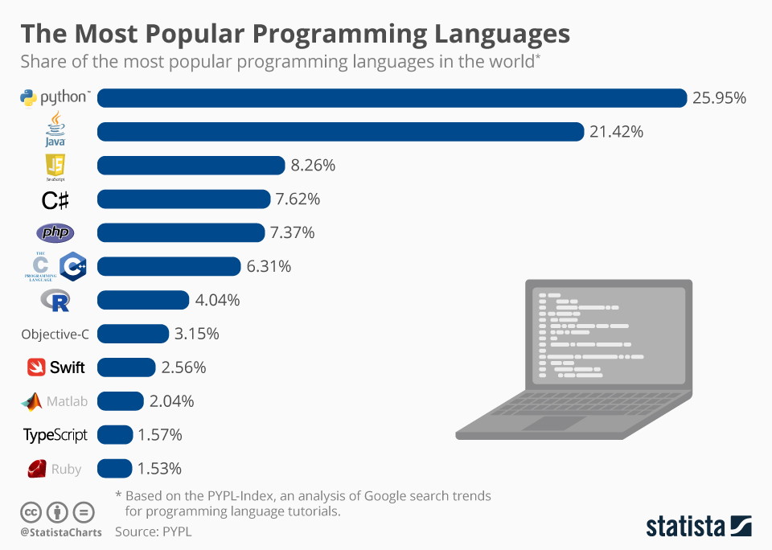

პროგრამირების ენები

ეს ვებსაიტი შექმნილია ყველაზე პოპულარული პროგრამირების ენებზე.
აქ შეგიძლიათ გაეცნოთ Python-ს, Java-ს, JavaScript-ს და C#-ს.
თითოეულ გვერდზე წერია მოკლე და მარტივი ინფორმაცია მოცემულ პროგრამირების ენაზე,
რისთვის გამოიყენება და რატომ არის პოპულარული.